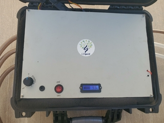
Matériel
triple pump
320 × 240 · JPEG · 48.3 Ko
0096c9b5e331__320-699825bac635e-20251013-145600.jpg
320 × 240 · JPEG · 48.3 Ko
0096c9b5e331__320-699825bac635e-20251013-145600.jpg276 × 224 · PNG · 20.8 Ko
0243a0d15b75__default-6a58ec611b7bf-14.png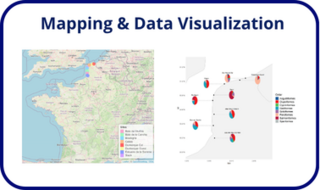
320 × 190 · PNG · 44.0 Ko
026e4b9a8cd2__320-6a5de99179950-datavisualisation.png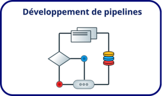
320 × 190 · PNG · 19.8 Ko
02735b50f564__320-6a4d2421dc1ed-site-web-ldgenx-34.png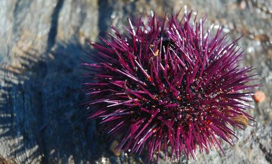
460 × 278 · JPEG · 30.9 Ko
03dbf3a27f72__460-6a4e57b062858-timvb1990-sea-urchin-1536812-1920.jpg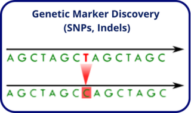
320 × 190 · PNG · 26.6 Ko
042e0bbef8c8__320-6a5deaf713f34-snp.png276 × 224 · PNG · 20.1 Ko
053e4f5b747f__default-6a58ecd82f888-18.png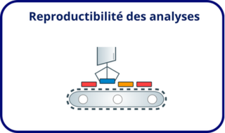
320 × 190 · PNG · 20.9 Ko
061dc627da8b__320-6a4d248ce9291-site-web-ldgenx-25.png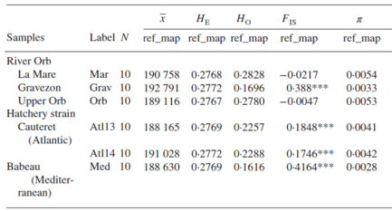
433 × 233 · PNG · 47.9 Ko
08bbb633ec01__433-62b59e82220f4-tableau.png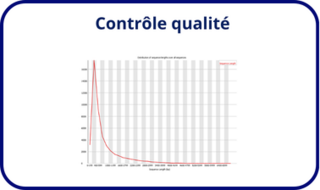
320 × 190 · PNG · 17.2 Ko
08e8692612c5__320-6a4d24286414f-site-web-ldgenx-33.png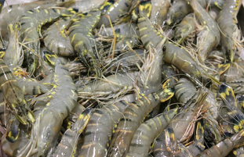
311 × 201 · PNG · 160.7 Ko
0b5ca4d701db__default-6a5e181ae26cb-capture-d-e-cran-2026-07-20-a-14-43-34.png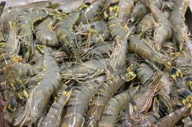
320 × 213 · JPEG · 73.4 Ko
0cf94f774009__320-6a228468c771a-anthony-camp-crevettes-unsplash.jpg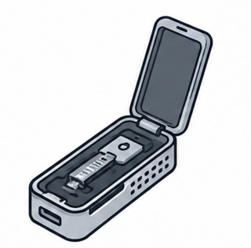
320 × 316 · PNG · 96.7 Ko
0da8ba8a5e04__320-6a4d0303af0ae-chatgpt-image-1-juil-2026-11-30-50.png7 × 129 · JPEG · 0.3 Ko
129b89dba774__barre-nav-header.jpg24 × 24 · GIF · 3.8 Ko
1496dc51eb8a__fancybox_loading.gif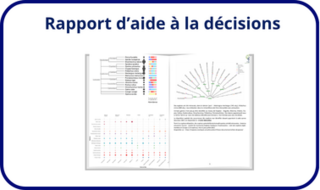
320 × 190 · PNG · 26.3 Ko
172ab05f2783__320-6a4d242e94402-site-web-ldgenx-32.png626 × 91 · PNG · 154.5 Ko
1b5972dcfb09__default-6a58e862613c3-2.png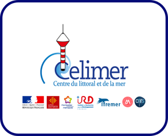
276 × 224 · PNG · 26.6 Ko
1bf09a185bad__default-6a58eafd88671-5.png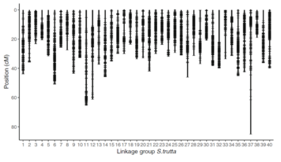
356 × 206 · PNG · 33.9 Ko
1c104242e5e3__356-62b49dce0df02-saintpe.png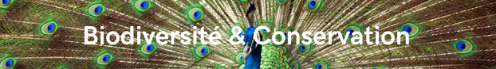
622 × 87 · PNG · 152.6 Ko
1dd59d6612e1__default-6a45332923190-site-web-ldgenx-11.png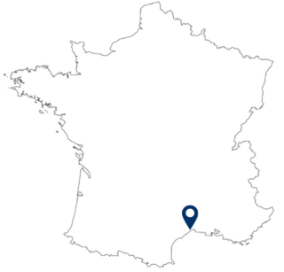
320 × 307 · PNG · 16.1 Ko
1fc5689e9f3a__320-6a5f85e360675-map.png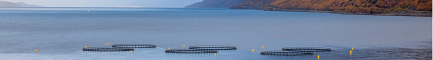
621 × 87 · PNG · 87.2 Ko
1fd3f56f5652__6a51039241840-site-web-ldgenx-49.png459 × 344 · JPEG · 24.2 Ko
2118e4a5d2b0__459-6a4e4062b798c-flockine-water-3569659-1920.jpg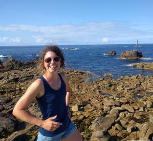
313 × 287 · JPEG · 19.8 Ko
23439c291336__313-62b44264b22b0-img-20210810-111318.jpg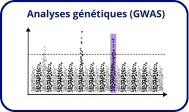
320 × 190 · PNG · 33.4 Ko
234acc1ad13a__320-6a4e19d19791b-site-web-ldgenx-36.png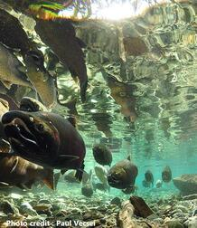
218 × 252 · JPEG · 17.4 Ko
284d5113d127__218-62b9a9e79d2a9-coho.jpg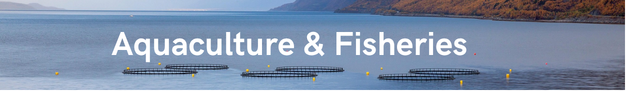
626 × 91 · PNG · 97.5 Ko
28ef6fde2829__default-6a58e86cc1db3-3.png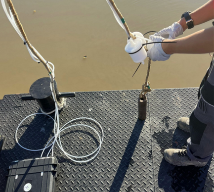
433 × 388 · PNG · 259.0 Ko
2997217b012f__433-6a5df7f67468d-capture-d-e-cran-2026-07-20-a-11-59-06.png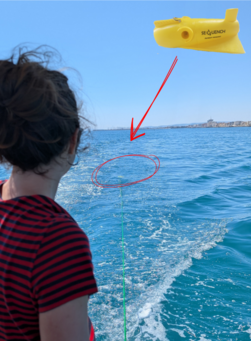
251 × 341 · PNG · 128.3 Ko
2be430792682__251-69cbf4b816737-torpille.png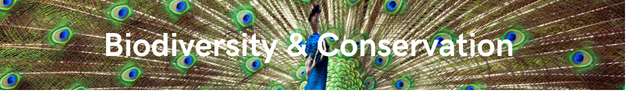
626 × 91 · PNG · 160.3 Ko
2c595a9b0bfc__default-6a58e859b93e8-1.png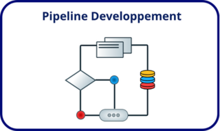
320 × 190 · PNG · 18.6 Ko
3095ed8f3497__320-6a5de9cbdae16-pipeline.png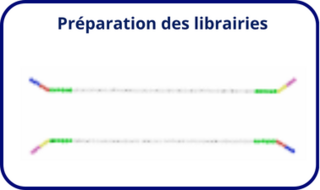
320 × 190 · PNG · 17.0 Ko
3289f4429298__320-6a4d249d6e9ee-site-web-ldgenx-24.png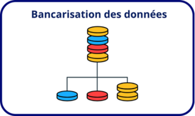
320 × 190 · PNG · 20.7 Ko
3317e05fd6f4__320-6a4d2447e4ccd-site-web-ldgenx-30.png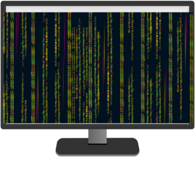
320 × 320 · PNG · 86.1 Ko
333cfc30d271__320-6a5dd4b0507e0-bioinfo.png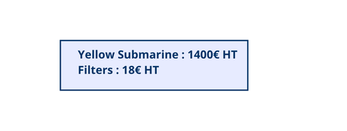
496 × 187 · PNG · 13.9 Ko
34060a7f8d5a__default-6a5e386276c76-equipent.png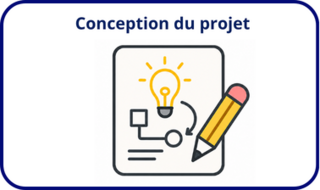
320 × 190 · PNG · 33.8 Ko
341f5f01a8a9__320-6a4d241b873c1-site-web-ldgenx-35.png252 × 142 · PNG · 70.0 Ko
353265dada54__default-6a5dd4c1e1f44-capture-d-e-cran-2026-07-20-a-09-55-27.png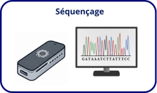
320 × 190 · PNG · 34.0 Ko
37f6ec2db969__320-6a4d24832e0b8-site-web-ldgenx-26.png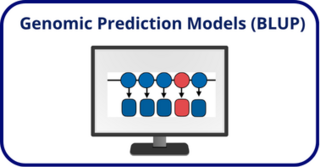
320 × 167 · PNG · 20.7 Ko
3922d9e9f304__320-6a5de979a6bcc-blup.png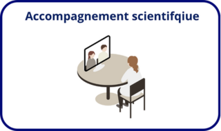
320 × 190 · PNG · 20.3 Ko
3a1273068b0a__320-6a4d24dfd8ae2-site-web-ldgenx-21.png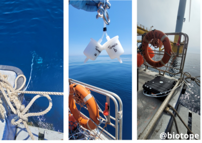
398 × 283 · PNG · 169.1 Ko
3d2d4ba338d3__398-6a5df86fc606c-biotope.png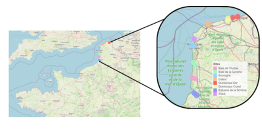
433 × 213 · PNG · 99.8 Ko
3f2565cad539__433-6a5df7c7151cb-capture-d-e-cran-2026-07-20-a-11-58-37.png320 × 181 · PNG · 38.9 Ko
418d3774bb33__320-65cb2c2e6345d-bar.png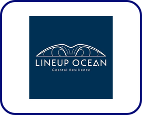
276 × 224 · PNG · 23.1 Ko
4206b585309a__default-6a58ed612887b-23.png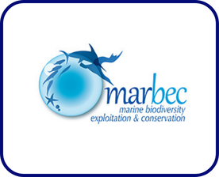
276 × 224 · PNG · 36.9 Ko
4219692fade6__default-6a58ced440ab3-16.png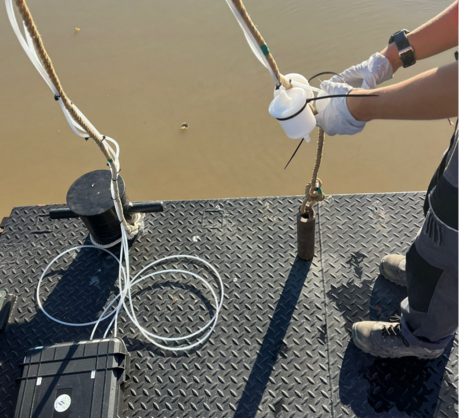
459 × 418 · PNG · 304.5 Ko
430a0a5c9118__459-6a4e3f27caf5c-dindart.png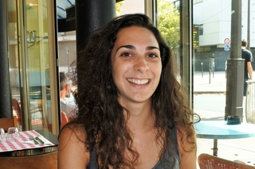
320 × 213 · JPEG · 62.3 Ko
431627da89b6__320-62c45db0e8a08-dsc-0029-latex-cv.jpg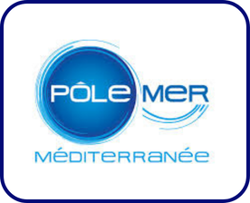
276 × 224 · PNG · 48.1 Ko
465b159e10ee__default-6a58ebbe2b81d-8.png302 × 85 · PNG · 11.7 Ko
468588a5a970__default-69971de3208ea-capture-d-e-cran-2026-02-19-a-14-41-13.png320 × 207 · PNG · 10.3 Ko
489f32d312ef__320-686f73d237de7-image-stage-siteweb.png626 × 91 · PNG · 107.4 Ko
4c46cb2f7761__default-6a58e877ef35b-4.png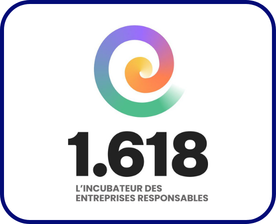
276 × 224 · PNG · 29.0 Ko
4ef08db93fd7__default-6a58ebdb74f82-9.png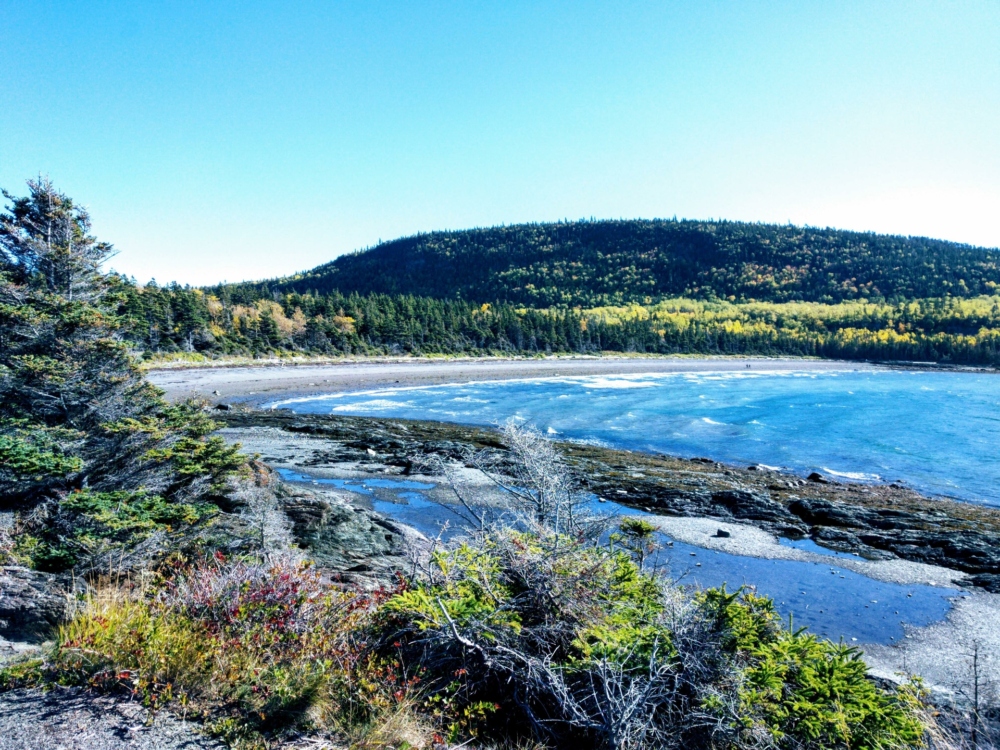
1920 × 1440 · JPEG · 2462.6 Ko
4f25b9258d30__6451331d0bca7-img-20191005-133117.jpg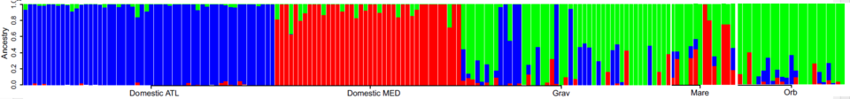
960 × 112 · PNG · 17.4 Ko
526fc7cf1182__960-62b48c6a407bd-admixture.png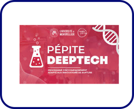
276 × 224 · PNG · 53.9 Ko
52d978268d79__default-6a58eba1bbc36-7.png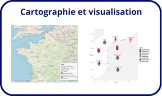
320 × 190 · PNG · 43.8 Ko
53d4dbe4e691__320-6a4d24576f8fa-site-web-ldgenx-29.png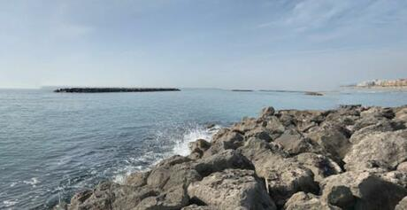
460 × 237 · JPEG · 16.8 Ko
5429396f3fcb__460-6a4e3ec10d081-palavas.jpg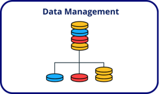
320 × 190 · PNG · 19.1 Ko
5630ddd814e6__320-6a5de987bbdfe-data-managment.png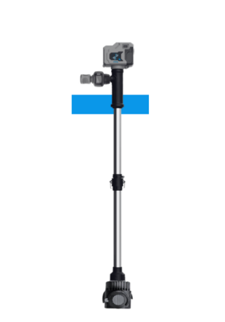
320 × 457 · PNG · 15.1 Ko
56d457600998__320-69971dd9992cc-stickpump.png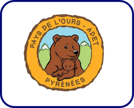
276 × 224 · PNG · 55.0 Ko
57583766b603__default-6a58ecf45908e-19.png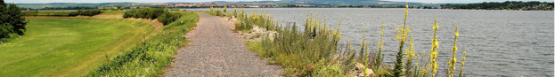
623 × 87 · PNG · 129.2 Ko
57db76c45484__6a510bc3d74df-site-web-ldgenx-52.png320 × 56 · PNG · 10.6 Ko
5913b81d52bc__320-69971e6cf08f6-waterra.png624 × 88 · PNG · 156.2 Ko
5914d7587d56__6a50fcac279bb-site-web-ldgenx-47.png320 × 190 · PNG · 17.5 Ko
5b837c99e790__320-6a5deb0f68d0a-support.png320 × 213 · PNG · 133.4 Ko
5c270e2adf79__320-65cb2a57ce7fd-edna1.png356 × 202 · PNG · 47.5 Ko
5e9a17fcadeb__356-65ca5b8e1fde1-bar.png320 × 190 · PNG · 27.3 Ko
60426b989a81__320-6a5deb078a06a-stat.png363 × 269 · PNG · 131.2 Ko
62a829c7114a__363-6a5e12af3c289-capture-d-e-cran-2026-07-20-a-14-20-11.png459 × 375 · JPEG · 127.2 Ko
63c1a4f6524c__459-6a4e45f00ac4a-53852.jpg459 × 260 · JPEG · 12.5 Ko
6492fa6fb23e__459-6a4e57ca80521-davidclode-shark-9897726-1920.jpg622 × 87 · PNG · 99.8 Ko
6699c22f9a74__default-6a4534a28b4db-site-web-ldgenx-17.png550 × 220 · PNG · 161.1 Ko
682bb403e772__550-6ac390fdf3d19-format-bo-photo-2.png320 × 190 · PNG · 44.7 Ko
6ffae0a69a20__320-6a5deaff86308-snppanel.png320 × 381 · JPEG · 26.0 Ko
7083b0dc5d9d__320-62a9d2962acf8-img-20190805-111018.jpg621 × 86 · PNG · 145.8 Ko
73e1f0548f14__default-6a453351240ca-site-web-ldgenx-12.png390 × 217 · PNG · 103.5 Ko
747ef4d638df__390-6a5e334f92a14-capture-d-e-cran-2026-07-20-a-16-35-43.png276 × 224 · PNG · 47.1 Ko
74fda20b3905__default-6a58eadcdc0c6-4.png398 × 202 · PNG · 99.8 Ko
769371c6fefc__398-6a5df83609abc-capture-d-e-cran-2026-07-20-a-11-58-02.png320 × 555 · JPEG · 26.2 Ko
77a7e6ed5f26__320-6a510e7cb33da-maxime.jpg496 × 176 · PNG · 12.1 Ko
77af31dc88f8__default-6a4e5faed8f0e-site-web-ldgenx-45.png320 × 190 · PNG · 11.4 Ko
79af3b9ed6a4__320-6a4d24f7da570-site-web-ldgenx-19.png626 × 91 · PNG · 104.2 Ko
7c8b81c451b4__default-6a58e97c1a7ee-5.png320 × 179 · PNG · 90.3 Ko
7ed08828170d__320-6a4cf498329ad-tylijura-fungus-9279389-1920.png320 × 214 · JPEG · 52.4 Ko
7fd3f76ff34e__320-6a217b79cf96b-vanellus-vanellus-1.jpg960 × 540 · JPEG · 43.7 Ko
859c50343a04__960-682dedeef006f-plaquette-services.jpg276 × 224 · PNG · 31.2 Ko
86d98efc6dca__default-6a58ec830c9fb-15.png390 × 318 · PNG · 181.8 Ko
8a1749794d92__390-6a5e3277c7393-capture-d-e-cran-2026-07-20-a-16-34-48.png320 × 190 · PNG · 22.9 Ko
8a8436f63905__320-6a4e19deb3ac8-site-web-ldgenx-38.png488 × 299 · PNG · 47.1 Ko
8d553e5c741a__488-6852e0a31ff62-plaquette-services.png626 × 91 · PNG · 161.5 Ko
8d922ddce3f2__6a5f6efa648e1-1bis.png276 × 224 · PNG · 39.2 Ko
8e1ed3a1bee5__default-6a58ed10189a0-20.png320 × 190 · PNG · 24.1 Ko
9184f8165f11__320-6a4d24c0084d6-site-web-ldgenx-23.png320 × 190 · PNG · 33.6 Ko
91d61a6c6c1f__320-6a5deaee7d0bc-sequencing.png276 × 224 · PNG · 20.7 Ko
924ac22c9ca9__default-6a58ec326cbff-12.png459 × 203 · PNG · 114.8 Ko
93c836baf070__459-6a4e3e20577fa-copie-de-soutenance.png251 × 131 · JPEG · 3.5 Ko
93d92bef2467__251-69981cc10bc2a-20260219-155036.jpg461 × 346 · PNG · 16.1 Ko
95a0e0f955ec__461-62b48e92c3b00-time.png16 × 18 · PNG · 0.4 Ko
95f308e00c5b__croix-publication.png276 × 224 · PNG · 19.0 Ko
96e5dc1d5d12__default-6a58eac581523-3.png276 × 224 · PNG · 22.3 Ko
971cdf9bb61a__default-6a58ec16270e1-11.png320 × 185 · PNG · 30.1 Ko
97ed5ce6b91e__320-65cb2859a9548-saintpe.png320 × 342 · PNG · 110.7 Ko
981453c0a4b2__320-6a5dd4bc1ccfc-capture-d-e-cran-2026-07-20-a-09-54-54.png320 × 190 · PNG · 18.4 Ko
98be0d13fd8f__320-6a5de99cb94a7-diversity.png320 × 190 · PNG · 8.8 Ko
9a6d2369f7f1__320-6a5de9d48d446-probe.png460 × 322 · PNG · 219.0 Ko
9c0e79fec487__460-6a4e3f0c05c15-site-web-ldgenx-41.png276 × 224 · PNG · 24.9 Ko
9d43b639bd77__default-6a58ea6467ff6-1.png570 × 356 · PNG · 97.6 Ko
9df6444fc4dd__570-62c59a94b88e5-figure2-manhattan-plot.png320 × 297 · PNG · 87.5 Ko
9f957d4a1635__320-65cb281e45a14-truites.png1920 × 392 · JPEG · 227.1 Ko
a28ea3958bc8__69970b48d4aa1-img-20191005-133117.jpg76 × 279 · PNG · 2.8 Ko
a42c48326d04__sprite-arrows.png621 × 87 · PNG · 92.4 Ko
a7cceab4deda__default-6a4533deefa53-site-web-ldgenx-16.png391 × 299 · PNG · 16.9 Ko
a85ba7409b25__391-62b9a2ee6154e-deletaire.png320 × 190 · PNG · 23.7 Ko
a878d7858238__320-6a5de9af5a808-extraction.png10 × 10 · PNG · 0.2 Ko
a9b96ac47bbb__fancybox_overlay.png320 × 190 · PNG · 25.3 Ko
ad729bfc052f__320-6a5de9eecd4bd-report.png449 × 271 · PNG · 279.7 Ko
af35b15bf907__default-6a5e3320b9250-capture-d-e-cran-2026-07-20-a-16-35-22.png
1 × 1 · GIF · 0.0 Ko
b1442e85b03b__blank.gif320 × 190 · PNG · 15.6 Ko
b500ff661eeb__320-6a5de9c3a34cb-librairy.png320 × 190 · PNG · 28.6 Ko
b5d8447f2e01__320-6a4e19d893a4a-site-web-ldgenx-37.png823 × 677 · PNG · 84.7 Ko
b609dec93523__default-6a4cd7c2214d6-chaine-valeur-site2.png570 × 409 · PNG · 74.7 Ko
b8067556dbd8__570-62c5b4d05e451-gebv-rfi.png320 × 190 · PNG · 32.2 Ko
b8876ca9f267__320-6a5de9de2c4d9-project.png320 × 128 · PNG · 82.1 Ko
b8d29d17a75b__320-6a4d01e4db988-capture-d-ecran-2024-10-29-181800.png44 × 152 · PNG · 1.3 Ko
b9d6fddb0988__fancybox_sprite.png320 × 190 · PNG · 28.4 Ko
bc32519ef30f__320-6a5de971cebfe-bioinfo.png320 × 190 · PNG · 45.8 Ko
bc8f5126aa7a__320-6a4e19e5b9e1b-site-web-ldgenx-39.png320 × 83 · PNG · 10.0 Ko
bdb39c16c04c__320-69982d08c898a-capture-d-e-cran-2026-02-20-a-10-43-58.png626 × 91 · PNG · 136.0 Ko
c0a1e1afdc40__6a5f80fd59686-env.png276 × 224 · PNG · 15.7 Ko
c0e24c86ad35__default-6a58ec4b0e6dd-13.png320 × 190 · PNG · 19.3 Ko
c25a516d7ccc__320-6a5de9a669ccb-dpcr.png276 × 224 · PNG · 32.6 Ko
c2f05cf03e5d__default-6a58eb143a85f-6.png320 × 293 · JPEG · 20.5 Ko
c4691725cb37__320-62b44264b22b0-img-20210810-111318.jpg320 × 190 · PNG · 31.5 Ko
c5b600059e27__320-6a4d2475c7869-site-web-ldgenx-27.png496 × 176 · PNG · 11.0 Ko
c64a3ed24807__default-6a4e603cb9218-site-web-ldgenx-46.png496 × 176 · PNG · 31.1 Ko
c89adf8d8398__default-6a4e5f94c9b24-site-web-ldgenx-44.png21 × 21 · PNG · 0.3 Ko
c96632d2fc0a__modifier-le-site.png276 × 224 · PNG · 29.0 Ko
c9cb9d77b00d__default-6a58ebfdc2592-10.png320 × 240 · JPEG · 57.3 Ko
cb591e3d02c8__320-699825d7456f3-20251013-145507.jpg315 × 430 · PNG · 187.2 Ko
cbd2fd0ac041__default-6a60c845f161f-capture-d-e-cran-2026-07-22-a-15-36-14.png320 × 161 · JPEG · 27.8 Ko
d2331b9d51f2__320-6998259991b35-20260219-155036.jpg320 × 435 · PNG · 205.7 Ko
d459ae43e6bf__320-699824ba85e1d-torpille.png626 × 91 · PNG · 153.4 Ko
d5e7600e8f59__6a5f7c3a4e7e7-agri.png320 × 62 · PNG · 10.8 Ko
d614005cc4e3__320-699824a1455ca-waterra.png320 × 190 · PNG · 30.3 Ko
d789e8698e7e__320-6a5de9b7f2820-gwas.png626 × 96 · PNG · 92.3 Ko
d94513c495e2__6a5f7514e151e-aquaculture.png320 × 190 · PNG · 19.5 Ko
da09c348714b__320-6a5deb1992091-workflow.png616 × 86 · PNG · 101.6 Ko
db44efa5766f__default-6a45301e431df-site-web-ldgenx-5.png276 × 224 · PNG · 40.9 Ko
dc1fb8809f06__default-6a58ed48f2fac-22.png352 × 155 · PNG · 11.4 Ko
dfae50eb8838__default-6a5e37c1225c3-stickpump.png295 × 200 · PNG · 109.4 Ko
e0b873220599__default-6a5e0dcc33f1a-capture-d-e-cran-2026-07-20-a-13-59-26.png11 × 16 · PNG · 0.3 Ko
e0e30d9609c3__closeWhite.png423 × 238 · JPEG · 12.4 Ko
e3b3a3b00a4f__423-682dedeef006f-plaquette-services.jpg280 × 224 · PNG · 25.4 Ko
e6076341c3cc__default-6a58ed2c49fc0-21.png183 × 509 · PNG · 23.6 Ko
e65b6739f45e__default-69982882ee170-stickpump.png320 × 190 · PNG · 19.2 Ko
e69e447be767__320-6a4d243df40fa-site-web-ldgenx-31.png16 × 16 · PNG · 0.4 Ko
ecf75cf058ea__favicon.ico626 × 91 · PNG · 136.4 Ko
efa7033e8d1b__default-6a58e93b39bad-6.png960 × 354 · PNG · 67.9 Ko
f158d7d06c64__960-62b97365b32db-introgression.png460 × 266 · PNG · 52.0 Ko
f953b84c33b6__460-62b49dce0df02-saintpe.png496 × 176 · PNG · 25.5 Ko
f99e71401949__default-6a5e3638ef849-pump.png620 × 87 · PNG · 128.9 Ko
fa38cb241d17__default-6a45337fc5bd8-site-web-ldgenx-15.png23 × 21 · PNG · 0.2 Ko
fbd33e00af94__arrow-back-template.png276 × 224 · PNG · 23.8 Ko
fc51b4fafa3d__default-6a58ed7eb72c8-24.png276 × 224 · PNG · 36.7 Ko
fd67c3e94e39__default-6a58ea6fa72c3-2.png320 × 229 · PNG · 17.3 Ko
fda505138ec0__320-682de64c5a18d-logo-ldgenx.png622 × 87 · PNG · 146.7 Ko
fdb1396c442b__6a510719604f0-site-web-ldgenx-48.png276 × 224 · PNG · 19.3 Ko
ffbb56ffe161__default-6a58ecbd094ed-17.png320 × 190 · PNG · 17.2 Ko
ffce9c149053__320-6a5de9e60aa45-qc.png